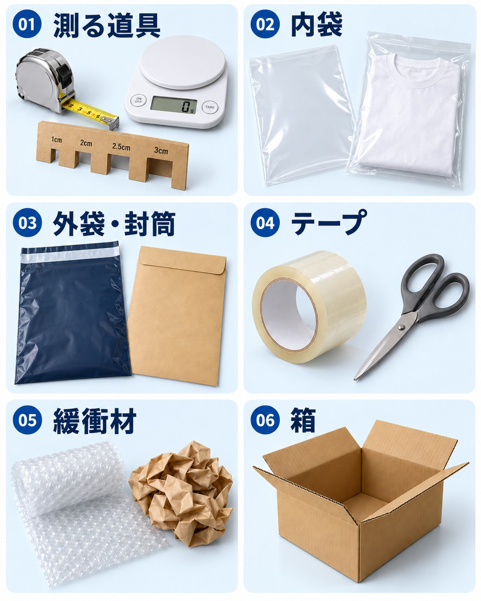

LESSON 01
梱包は「商品を守る」と「サイズを測る」から
梱包資材を全部そろえる必要はありません。まずは出品予定の商品を見て、水濡れ・折れ・衝撃のどれから守る必要があるかを考えます。
- 商品の状態を確認する
汚れ・水分・破損がないかを確認。付属品もそろえ、発送前の状態を写真に残しておくと説明しやすくなります。
- 保護した状態でサイズを測る
商品だけでなく、袋・緩衝材・箱も含めた厚さと重さで配送方法を選びます。
- 配送方法に合う外装を選ぶ
専用箱・専用封筒が必要な配送方法もあります。資材の価格も発送費用に含めます。
LESSON 02
写真で見る、梱包資材の種類
内側で守る袋と、外側を包む袋は役割が違います。名前だけでは分かりにくい資材を、見た目で確認しましょう。

LESSON 03
最初にそろえたい、基本の5種類
メジャー・はかり・厚さ測定定規
サイズと重さを確認する道具。最後に梱包した状態で測ります。厚さ定規だけで、全ての配送条件を確認できるわけではありません。
内袋：ポリ袋・OPP袋
衣類・本・小物を水濡れから守るために使います。商品の大きさに合う、清潔で破れのない物を選び、口を閉じます。
外袋・封筒
中身が見えにくく、破れにくい物を選びます。薄い内袋だけで発送せず、商品に応じて外装を重ねます。
梱包用テープ・はさみ
一般の外袋や段ボールの封を閉じる道具。マスキングテープだけで外装を固定しません。専用箱は、その箱の指定どおりに封をします。
緩衝材・隙間を埋める紙
気泡緩衝材などで衝撃を和らげます。箱の中で商品が動かないように、隙間も調整します。
LESSON 04
必要になってから買い足すもの
段ボール・専用箱
壊れ物、厚みのある商品、配送方法で指定されている場合に。一般の箱は清潔で丈夫な物を使い、古い送り状やバーコードを除きます。
補強板・厚紙
カード・写真・薄い本などの折れ対策に。防水だけでは折れを防げないので、商品に合う硬さを選びます。
圧縮袋・ストレッチフィルム
圧縮しても傷まない衣類などに必要な場合だけ使用。変形・しわ・付属品の破損に注意し、圧縮発送することは商品説明で事前に伝えます。
サンキューカード
あれば使える任意の資材。まずは丁寧な梱包と期限内の発送を優先し、最初から大量注文する必要はありません。
LESSON 05
薄い・小さい商品に使う配送方法
以下はメルカリ便の通常送料（税込）です。2026年11月1日確認。送料と資材代は別です。利用直前にも公式案内を確認してください。
ゆうパケットポストmini｜送料160円
専用封筒が必要。2kgまで、郵便ポストに無理なく入ること。封筒の外寸は21.6×17.8cm、内寸は21.1×16.8cmです。厚さはポストの投かん口によります（目安3cm）。
ネコポス｜送料210円
3辺合計60cm以内・長辺34cm以内・厚さ3cm以内・1kg以内。最小サイズは23×11.5cm。商品保護を含めてサイズを測ります。
ゆうパケットポスト｜送料215円
発送用シール、または専用箱が必要。シール利用は3辺合計60cm以内・長辺34cm以内・2kgまで。最小14×9cm（円筒を除く）で、ポストに投かんできること。専用箱は32.7×22.8×3cmです。
LESSON 06
厚みがある商品は、箱の費用も確認
ゆうパケットプラス｜送料455円＋専用箱65円
24×17×7cm以内、2kg以内。送料と箱代で520円。さらに使う内袋・緩衝材の費用も考えます。
宅急便コンパクト｜送料450円＋専用資材70円
送料と専用資材で520円。通常の専用BOXは外寸25×20×5cm。専用薄型BOXは34×24.8cmで、収納時の厚さは外寸5cmまで。箱を変形させずに収めます。
宅急便60サイズ｜送料750円
梱包後の3辺合計60cm以内・2kg以内。一般の段ボールなどを使えますが、資材代は別途必要。これを超える場合は、対応サイズの料金を確認します。
LESSON 07
商品別：梱包の組み合わせ例
- 衣類：内袋 → 外袋
汚れや水分を確認して畳み、内袋の口を閉じ、丈夫な外袋へ。厚みが出る衣類は、無理に押し込まず箱も検討します。
- 本・カード：防水 → 折れ対策 → 外装
袋で水濡れを防ぎ、必要に応じて厚紙や補強板で折れを防止。角や端も保護します。
- 陶器・割れ物：個別の緩衝材 → 隙間埋め → 箱
商品同士がぶつからないように分けて包みます。箱の底・側面・上部も保護し、箱の中で動かないか確認します。
- 小型機器：保護 → 付属品を分ける → 箱
付属品が本体に当たらないように分けて固定。電池やバッテリーを含む物は、配送会社の条件も確認します。
商品によって必要な保護は変わります。迷った場合は、配送会社の品目別の梱包案内を確認してください。
LESSON 08
封をする前に、ここをチェック
宅急便コンパクトの専用BOXも再利用できません。付属のテープで封をし、ガムテープなどで補強する使い方は避け、公式の梱包条件に従ってください。
LESSON 09
買いすぎず、発送する量に合わせてそろえる
まずは、直近で出品する商品に必要な分を少量用意します。実際に使った資材代を記録すると、1件あたりの利益も把握しやすくなります。